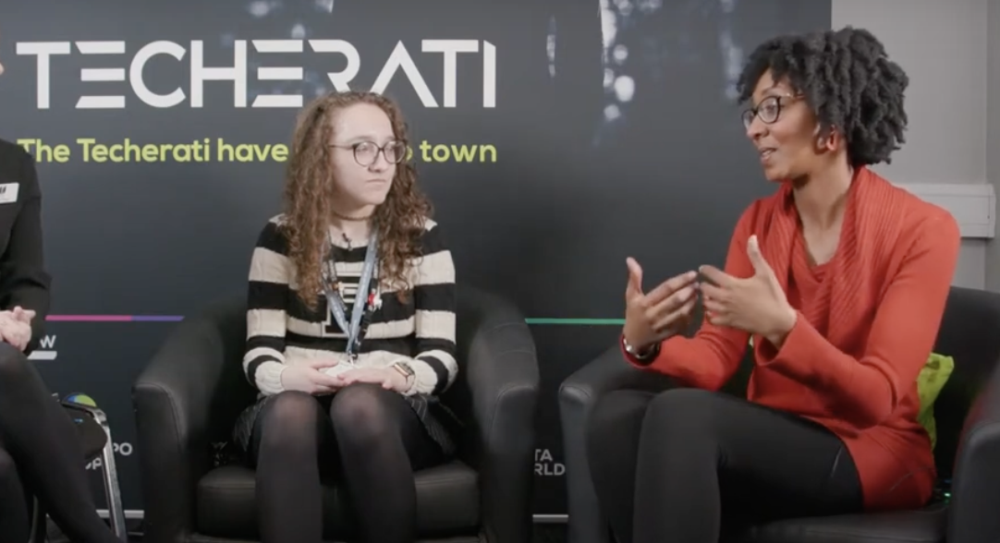
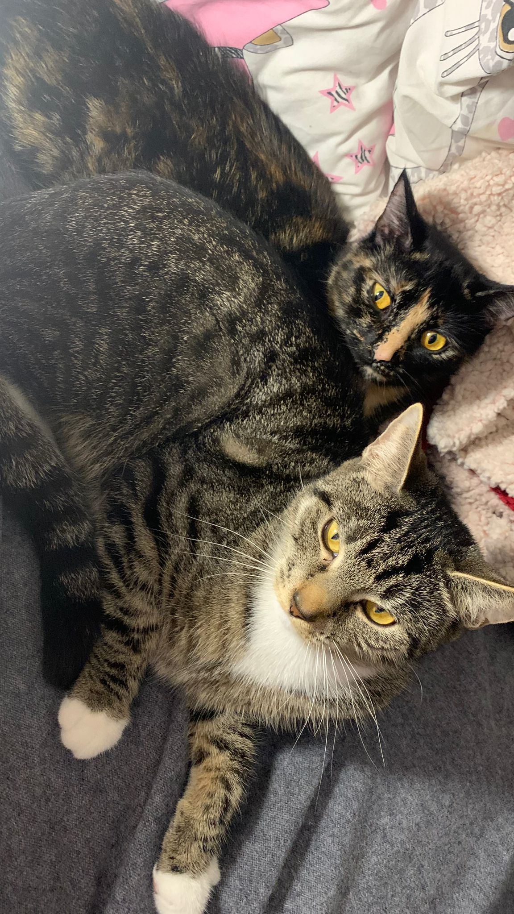
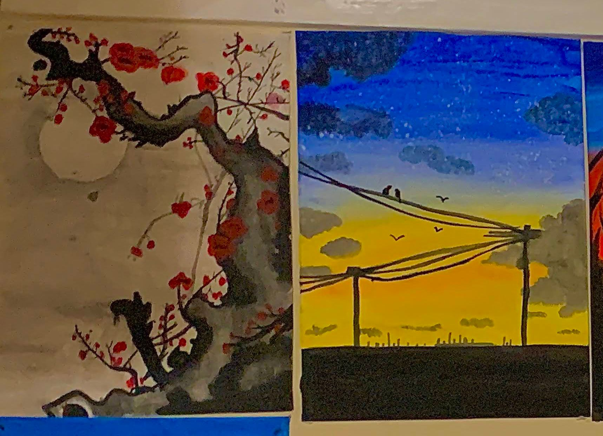

Computer Science
I've been passionate about computer science since I first
encountered it in my first year of secondary school. What draws me
to it is the sense of freedom and creativity it provides. As someone
who appreciates art, I view programming as a means of
self-expression, allowing me to channel my creativity and ideas into
a digital canvas that I understand and enjoy.

Games
I have a deep passion for games, both as a player and a creator. I
love seeing the mesmerizing animations and captivating graphics in
game. Some of my favourite titles are Genshin Impact, Breath of the
Wild, and Animal Crossing.

Cats
I have two cats named Ivy and Koko. They're both girls and they
enjoy play-fighting, sneaking bites of each other's food, and
keeping me company under my desk while I work. I love them a lot!

Painting
I enjoy painting with watercolors during my free time, with a focus
on landscapes. I find great satisfaction in capturing the serene
beauty of sunsets and nature in my artwork.
